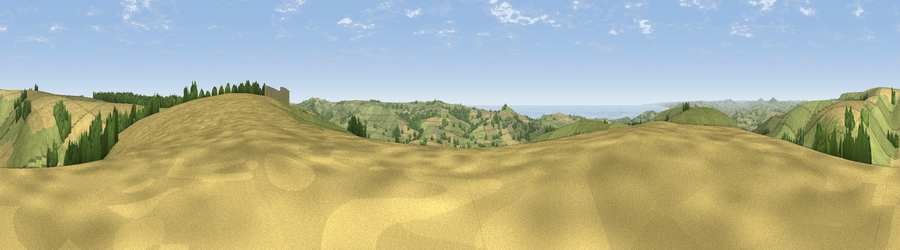

Viewpoint near Litton Cheney
#2555 in England · top 8% of its area beats it · near Litton CheneyWhere it is
The exact computed spot (SY 55162 91838). Click the marker for map links.
The view, rendered

A 360° render of this exact spot computed from the terrain model, tree cover and land cover — summer colours, afternoon light, calibrated against photographs of famous viewpoints. Real trees, hedges and buildings will differ in detail.
The panorama
Grey silhouette: terrain skyline in each direction (720 bearings, Earth curvature and refraction included). Dashed green: skyline with trees (+15 m) and buildings (+8 m) as obstacles. Blue strip: how far the ground is visible on each bearing.
Where the view opens
Wedge length = distance to the farthest visible ground on that bearing (vegetation-aware). Rings at 10, 25 and 50 km.
What fills the view
52% grassland · 34% cropland · 8% woodland · 5% water
Angular shares of the visible panorama (visual magnitude), not map area. Landscape diversity 0.47 (0–1 Shannon).
Key numbers
More beautiful places nearby
The staircase of upgrades: each row has a higher view potential than everything closer. Driving times are estimates from straight-line distance, calibrated against real road routing — check an actual route before setting out.
| Place | Direction | Drive | Score |
|---|---|---|---|
| Eggardon Hill | N · 2 km | ~6 min | 80.3 |
| Viewpoint near Askerswell | NNW · 3 km | ~7 min | 81.7 |
| The Knoll | SSW · 4 km | ~10 min | 91.0 |
50.72442, -2.63658 · source: screening · position refined by local search. Computed location — check access rights before visiting.